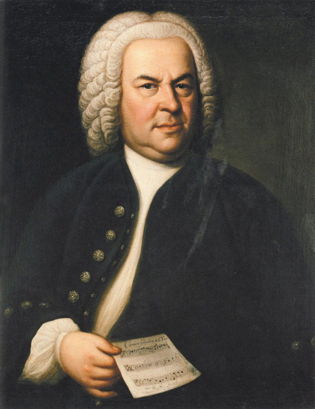

Equivalent Fractions
Dimensions Math 3B, Chapter 10, Lesson 1 · Equivalent Fractions
Leipzig, Germany · about 300 years ago

How can two fractions with different numbers name the same amount?
Same whole, same length shaded. One-fifth and two-tenths are two names for the same amount.
You will…
- Split every part of a whole into the same number of pieces and give the same amount a new name.
- Group equal parts into bigger parts to find another name.
- Explain why equivalent fractions name the same amount.
Why Bach?
A real painting of Johann Sebastian Bach, made in 1748 when he was 63 years old. He holds a small page of music he wrote. Bach worked in Leipzig for 27 years. Every week he wrote music for the church and taught the boys at the school next door.

Today's math: in music, a measure is one whole. Different notes can fill the same amount of time. Today you'll find fractions that look different but fill the same amount.
To multiply by 8, double the number three times. 8 × 3: 3, 6, 12, 24. Type each answer, then check. You can fix any answer and check again.
One equal part
A strip cut into 6 equal parts. One part is shaded.
Think: Two Players, One Measure
🔨 Do · listenThe navy bar is one whole measure of music. The top player's row has 2 one-third tiles. The bottom player's row is empty. Every tile plays a note that lasts as long as the tile is long. The gold line shows where the top player stops.
Build the bottom row from twelfths
Tap the one-twelfth tile in the tray to add it to the bottom row. Stop when the bottom row ends on the gold line.
Press ▶ Play both rows
Listen. Do both players stop on the same beat?
Name both rows
Different tiles, same length. Two-thirds and eight-twelfths fill the same amount of the measure: 23 = 812.
Equivalent fractions name the same amount.
Split every fifth into 2 equal pieces. Now there are 10 pieces, and 2 are shaded. The shaded part did not change. 15 = 210.
- Same whole. Only compare parts of the same whole: strips or number lines that are the same length.
- Split every part the same way. The numerator and the denominator change. The shaded amount does not.
- Or group the parts the same way. Equal groups make fewer, bigger parts. The shaded amount stays the same.
- Check. The shaded parts end at the same place, and the fractions land on the same spot on a number line. Equivalent sounds like equal: same amount, new name.
Four ways to see one-fifth and two-tenths
Your Turn: Find the Twin
🔨 DoBach's music rule is 1 meter long. One edge is marked in sixths and the other edge in twelfths. Find the twelfths mark that lines up with five-sixths.
Two number lines from 0 to 1, the same length. The top line is cut into sixths. The bottom line is cut into twelfths.
Put the top dot on five-sixths
Drag the red dot on the sixths line 5 jumps from 0. You can also tap a mark.
Put the bottom dot right under the top dot
Drag the red dot on the twelfths line until it sits right under the top dot.
Name the twin
Ava's Bigger Numbers
🔨 Do · ✏️ WriteAva says, "4 and 12 are bigger numbers than 1 and 3, so four-twelfths is more than one-third." She wrote 412 > 13.
Fraction tiles: a bar of twelfths and a bar of thirds under 1 whole. Then Ava's comparison. Her symbol is in the box, marked "Ava's".
Shade 4 tiles in the twelfths bar
Tap the 4th tile in the twelfths bar.
Shade 1 tile in the thirds bar
Tap the 1st tile in the thirds bar.
Where does the shading stop?
Fix Ava's symbol
Drag a new symbol into the box.
Help Ava
Leo's Paper Strips
🔨 Do · ✏️ WriteLeo made two paper strips to show two-fifths and four-tenths. He says they are not equal, because the shading does not stop at the same place. Look closely at his bottom strip.
The navy bar is 1 whole. The top strip is cut into 5 equal parts with 2 shaded. Leo's bottom strip has 10 parts with 4 shaded. The dashed line shows where 1 whole ends.
Make the bottom strip 1 whole
Drag the gold end of the bottom strip to the dashed line. You can also tap it.
Make the 10 parts equal
Press ✂ Re-cut into 10 equal parts.
Compare again
Fix Leo's thinking
Group the Tenths
🔨 DoBach's student shaded 8 tenths of a strip. Group the tenths in pairs to find a name with fewer, bigger parts.
A strip cut into 10 equal parts, with 8 shaded. A small gold dot sits on every line between two parts. Tap a dot to make that line a thick group line.
Make a group line after every 2 tenths
Tap the gold dot after the 2nd tenth. Then tap the dots after the 4th, the 6th and the 8th tenth.
Name the bigger parts
Split the Fifths
🔨 Do · ✏️ WriteBach's music copier filled three-fifths of a page with notes. Split every fifth into 2 equal pieces. What is the new name?
A strip cut into 5 equal parts, with 3 shaded, under 1 whole. The buttons split every piece at once.
Split every piece in 2
Press ✂ Split every piece in 2.
Name it
Tell why
Fill Bach's Measure
🔨 Do · ✏️ WriteWrite your own measure of music. Use any notes you like, but the measure must be exactly 1 whole. Then play it with the start of a real piece by Bach.
The navy bar is 1 whole measure. The tray has a half note tile, a quarter note tile and an eighth note tile. Each tile plays its note for as long as the tile is long.
Problem 1 · Fill the measure
Tap the note tiles in the tray to add them. Keep going until the measure is exactly full.
Problem 1 · Play it
Press ▶ Play my measure with Bach.
Problem 2 · Write what you see
Prove It
✏️ WriteProblem 3 · Prove It
Three Names for One Amount
Fill in the numerators so all three fractions name the same amount.
Turn in your work
- Check the list below. Jobs 1 to 8 are required. The Bonus is optional.
- Press 📋 Gather my answers, then 📋 Copy. Or press 🖨️ Print or save as PDF.
- Open this lesson's assignment in Canvas.
- Paste your answers (or upload your PDF and journal photo), then press Submit.
All my answers
Your answers and your work on this page save on this device as you go.
Before you turn in
- I finished Jobs 1 to 8.
- I sketched my Prove It strips in my math journal.
- I wrote two equivalent fractions from my own measure.
- I tried the Bonus. (optional)
Lesson 3.10.02 · Finding Equivalent Fractions
Today you split and grouped strips to find equivalent fractions. Next, you'll find a shortcut: what happens to the numerator and the denominator when every piece is split the same way?
Bach · Brandenburg Concerto No. 3, first part
Written about 300 years ago for nine string players and a keyboard. About 5 minutes.
Johann Sebastian Bach, Brandenburg Concerto No. 3 in G major, BWV 1048, first movement. Recording from the Al Goldstein collection (Pandora Music, ibiblio.org), Wikimedia Commons, CC BY-SA 2.0.